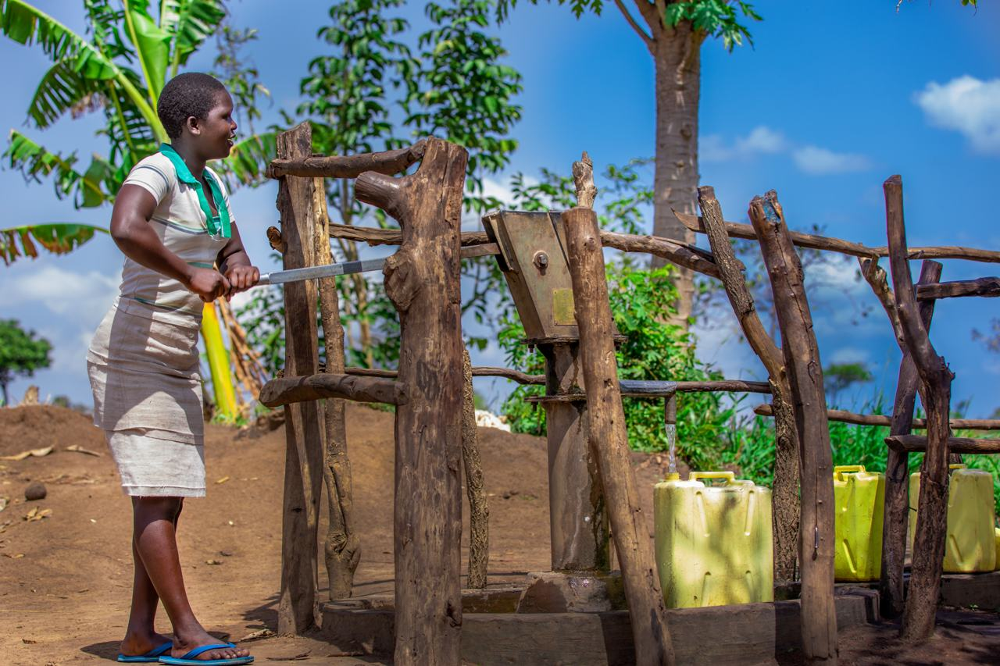
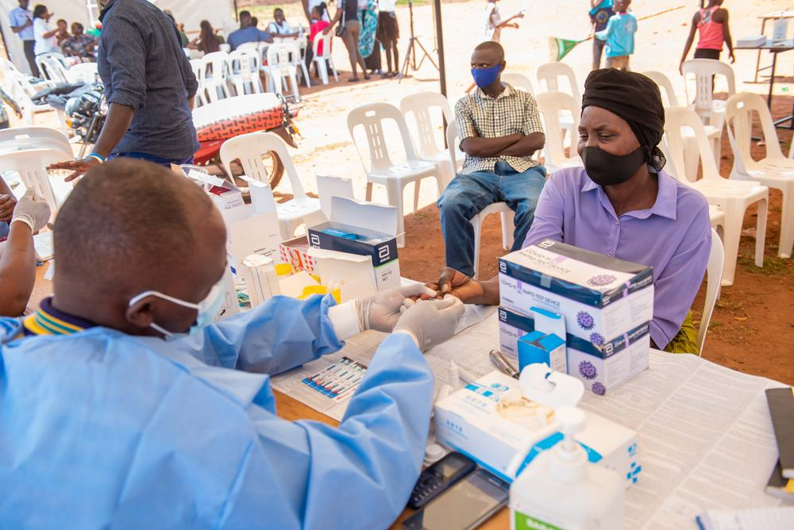
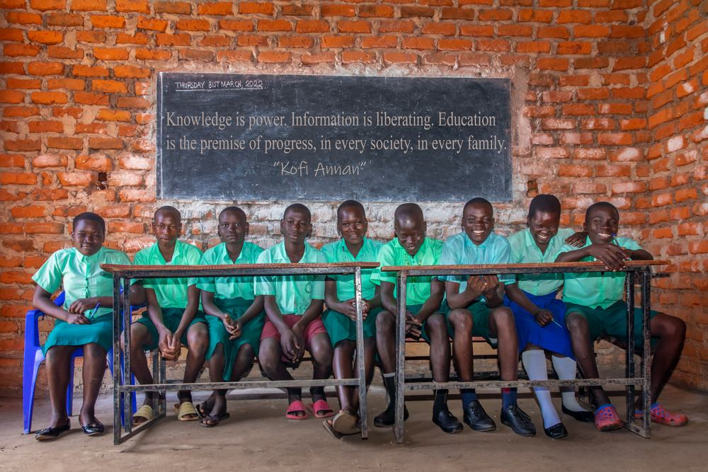
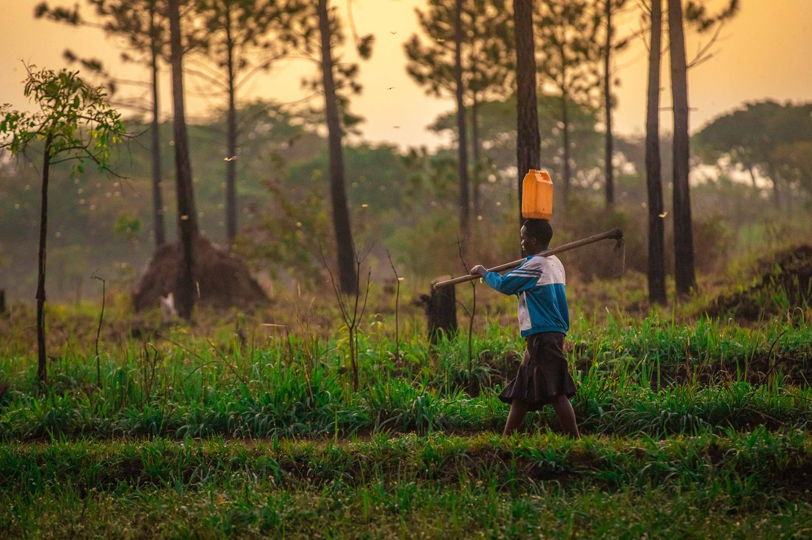

Independent visual audits for donors
You funded it. We'll show you it's there.
We visit the projects you pay for across Uganda, often unannounced, and show you on camera whether they exist, are finished and are being used.
Most reports come from the people you fund
Progress reports, photos and success stories usually come from the organisation receiving the money. Most are honest, but a few aren't. From far away, it's hard to tell which is which.
How it works
Tell us what you funded
Share the sites, the outputs and what "done" should look like.
We go, often unannounced
A field team reaches the site within 72 hours of your go-ahead. Grantees don't get the date, or get very short notice when the people responsible need to be there, so nothing can be staged.
We document everything
GPS- and time-stamped photos and video, consented interviews with the people the project serves, and notes on what's missing.
You get the facts
An executive audit brief within 5 working days of the last site visit. If we find something serious, we call you within 24 hours.
Timelines for larger audits are agreed upfront.
What you get
- Dispatch within 72 hoursA field team reaches the project site on short notice.
- GPS- and time-stamped photo logEvery image carries its location and capture time, so old or reused photos can't pass as new.
- Verified beneficiary interviewsShort, consented interviews with the people a project is meant to serve.
- Executive audit briefA concise written summary of what we found, with the visual evidence attached.
Paid by you. Answerable to you.
- You pay us, not the organisation we're checking. They can't buy a better report.
- We arrive unannounced or at very short notice. Audits are written into your grant agreement and cleared with local authorities, but grantees never get enough notice to stage anything.
- We never audit an organisation that is paying us for content. If we've worked with them before, we tell you before we start, and you decide.
- We report what we find. Good news and bad news go in the same brief.
The same crews who film for organisations across Uganda
Our audit teams are documentary filmmakers and photographers. The skills that tell a programme's story are the same ones that show you its truth.



Tell us what you've funded
Share a project, a grant or a list of sites. We'll come back with a plan and a quote.